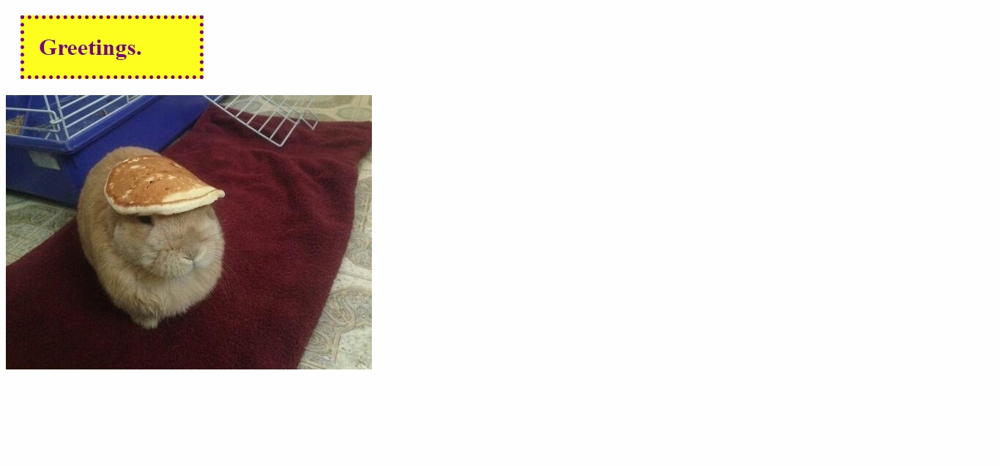
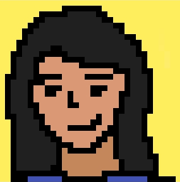
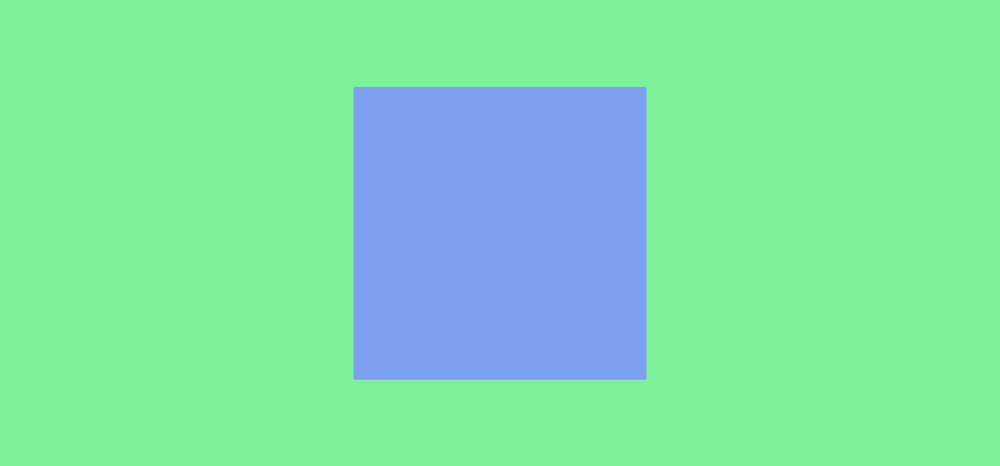
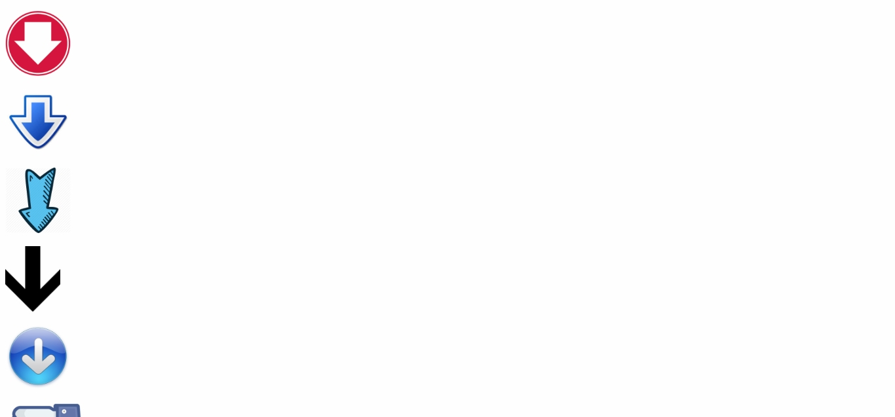
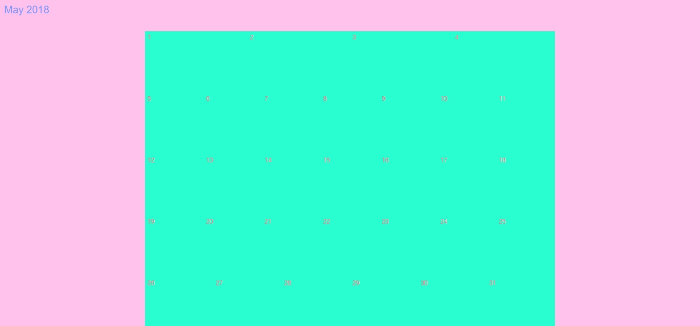
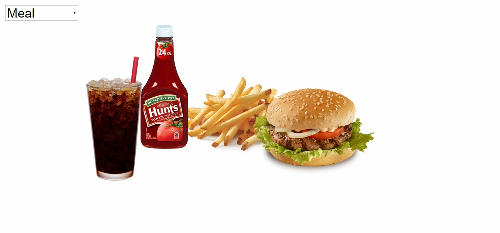

Projects
Project 01: Image Journal
The idea of the Image Journal is to observe and document anything in the environment that sparks an idea for a possible online interaction.

Project 02: All-HTML
The idea of All-HTML is to see how html tags look by default, and to arrange or use them to one's own intention.
Project 03: Mashup
The idea of the Mashup is to create a website that includes audio plus images, video, and text.
Project 04: Clock
The idea of the Clock is to create a clock or anything that keeps, marks or utilizes time.
Project 05: Catalog
The idea of the Catalog is to document work done in class throughout the semester.
Workshops

Workshop 01: Pixel Portrait
The pixel portrait is a 32x32px self-portrait.
Workshop 02: Still Life
This still life drawing is created using only HTML and CSS.
Workshop 03: Animation
The animation studies background color, scale, shape, position, and another CSS property.

Workshop 04: Hover
The idea of Hover investigates the desktop interface, specifically through its unique interaction of the hover state.

Workshop 06: jQuery
jQuery changes the style of the website interactively.
Workshop 08: Responsive Page
Responsive Page covers how to make a website responsive through the use of media queries.

Workshop 09: Flexbox Calendar
Flexbox is best for small-scale layouts, while the Grid layout is intended for larger scale layouts.
Workshop 10: iFrame Portal
This workshop utilizes the iframe tag to bring two or more worlds together, be it side by side, layered on top of each other, or one site containing itself in an iframe, and so on.

Workshop 11: Select
Filters modify their source through the addition or removal of information. This workshop uses at least 3 filters to modify its source through a website.